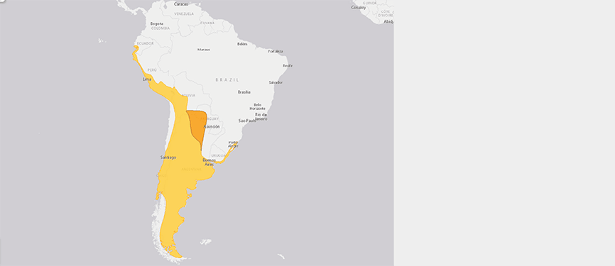
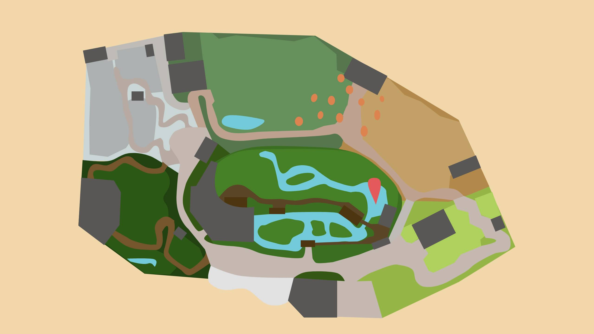

CHILEFLAMINGO
PHOENICOPTERUS CHILENSIS
Drei der sechs Flamingoarten kommen in gemässigt warmen bis tropischen Regionen der Erde vor. Die anderen drei Arten, wozu auch der im Zoo Zürich gehaltene Chileflamingo gehört, fühlen sich in erstaunlich kalten Lebensräumen wohl.
Zum Nahrungserwerb sind alle Flamingos auf salzhaltige Binnenseen angewiesen. In solchen Gewässern wächst pflanzliches und tierisches Plankton, welches die Tiere mit ihren nach unten geknickten Schnäbeln aus dem Wasser filtern. Solche Gewässer gibt es nicht nur auf Meereshöhe, sondern auch in den Anden Südamerikas in Höhenlagen über 4000 Meter über Meer. Die Nachttemperaturen können dort unter minus 20 Grad Celsius fallen.
Zusammen mit Algen und Krebsen nehmen die Flamingos verschiedene Farbstoffe auf. Diese werden zuerst in der Leber in rötliche Pigmente umgewandelt und schliesslich in den Federn der Vögel eingelagert, was zu ihrer charakteristischen rosa Färbung führt. Ohne diese Pigmente wären Flamingos weiss. Dennoch entdeckt man immer wieder einmal einzelne Tiere, welche ein beinahe weisses Federkleid haben. Dabei handelt es sich in der Regel um Vögel, die gerade Jungtiere aufziehen. Sie verstoffwechseln in dieser Phase die Stoffe, die sie sonst zur «Farbproduktion» einsetzen, teilweise anderweitig.
Steckbrief
| Verwandtschaft | Flamingos |
|---|---|
| Lebensraum | Salzhaltige Seen bis 4500 Meter über Meer, Meeresküsten |
| Lebenserwartung | 60 Jahre |
| Futter | Kleine Krebse, Schnecken, Insekten, Algen, Karotin als Futterzusatz im Zoo; Küken mit Kropfmilch: Dabei handelt es sich um Gewebezellen, die sich im Verdauungstrakt und im Kropf der Elterntiere ablösen und in Form einer «Milch» dem Jungtier übergeben werden |
| Lebensweise | Bodenlebend, in flachen Gewässern, tagaktiv |
Verbreitung
Bedrohunsstatus
Karte
